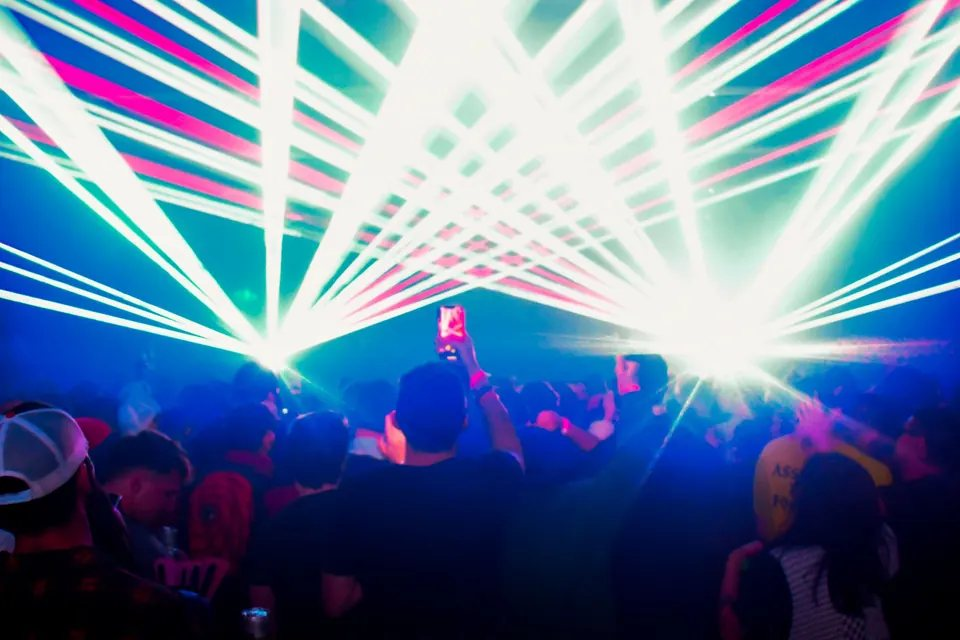

Co-founder
Joshua McKenzie German
Creative strategy, production, editorial.

Curious & Creative is the company Joshua German and Janel Moore are building in Los Angeles. Joshua leads creative strategy, production, and editorial direction. Janel leads on technology, finance, and operations, and she is a creative partner in her own right, including as the host of Too Much to Tweet. Together they run a media network, a production studio, and a consultancy, and the three parts feed each other: the network keeps their instincts close to real audiences, the studio keeps their craft honest, and the consultancy turns both into judgment other people can hire.


Original shows and the channels around them.

Photography, event coverage, video, editing, podcasts, and websites for clients.

Culture, audience, and practical AI for brands and teams.
Creative strategy, production, editorial.

Technology, finance, campaigns — and host of Too Much to Tweet.
The founders also lead SCAiL, a South Carolina nonprofit working to bring AI literacy to communities that are usually last in line for it.
Tell us what you're building, or just come say hi.